PROTAGONISTAS


JOKER (REN AMAMIYA)
Líder de los Phantom Thieves. Un estudiante de secundaria que despierta al poder de Persona tras ser falsamente acusado.

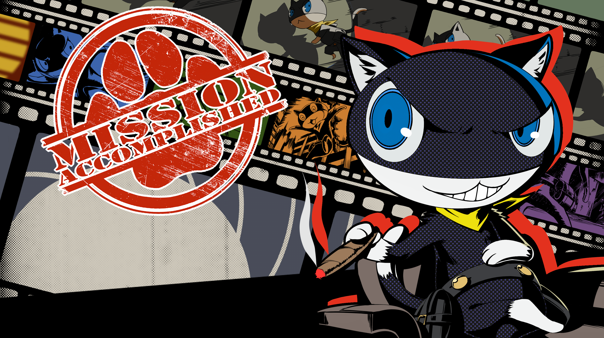
MORGANA (MONA)
Una misteriosa criatura con apariencia de gato que sirve como guía y mentor del grupo en el Metaverso.
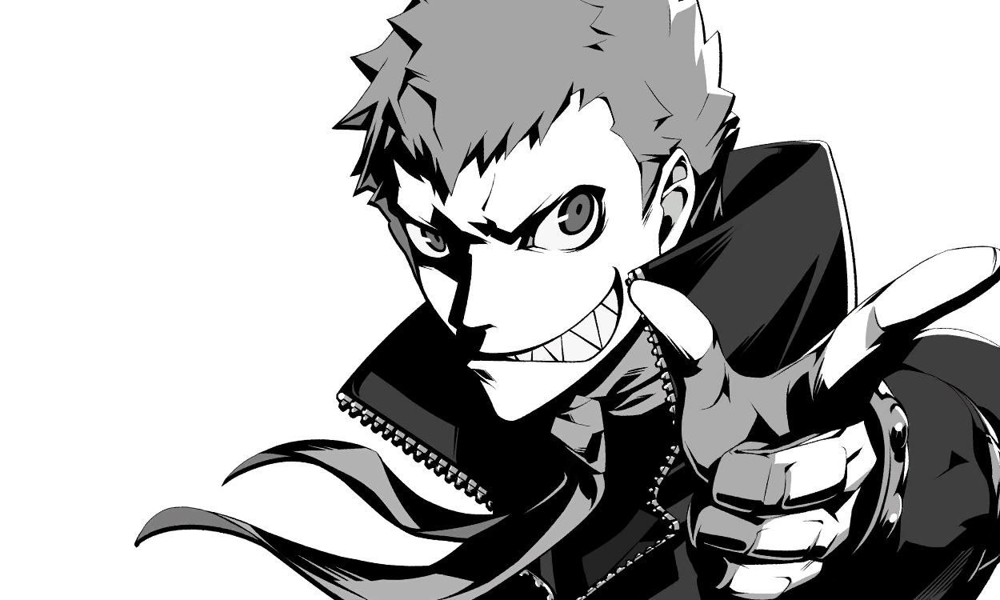
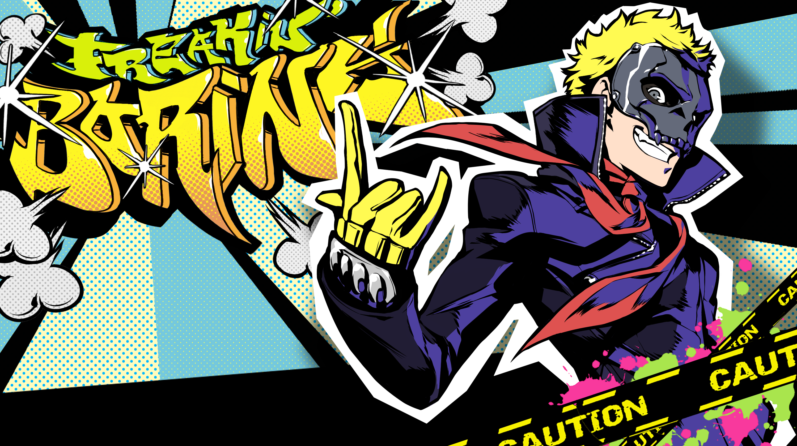
RYUJI (SKULL)
Ex atleta de atletismo y el primer amigo del protagonista en Shujin. De carácter impulsivo y leal, actúa como el músculo e iniciador del equipo.
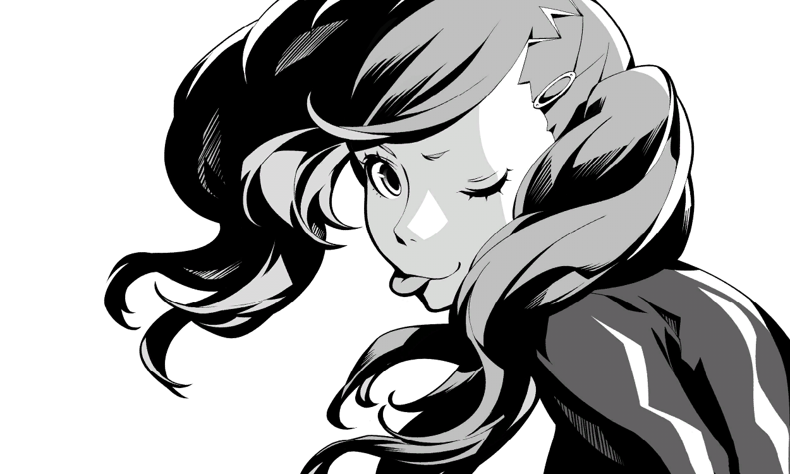

ANN (PHANTER)
Compañera de clase de Joker y modelo a tiempo parcial. Despierta su Persona tras revelarse contra el abuso de Kamoshida hacia sus compañeros.

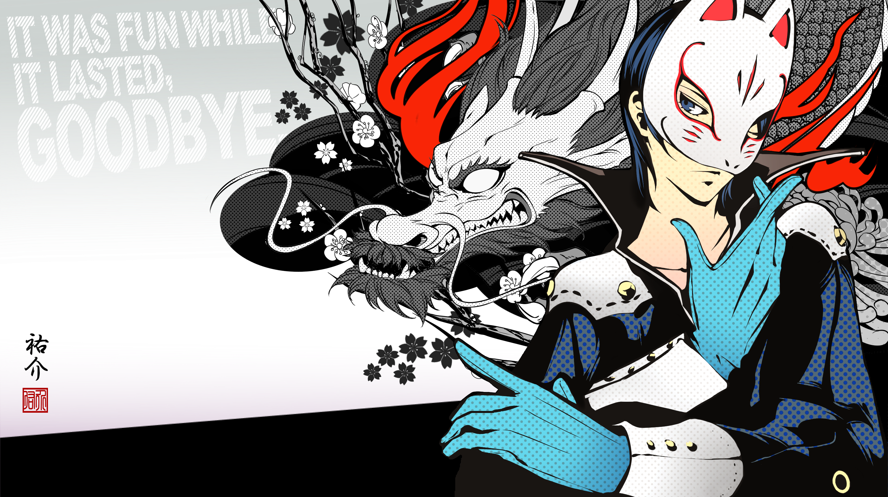
YUSUKE (FOX)
Estudiante de arte en la Academia Kosei y apasionado de la estética. Se une al grupo tras descubrir la corrupción de su maestro, Madarame.

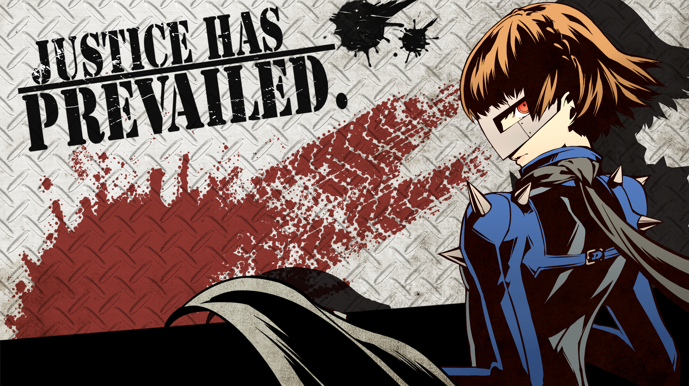
MAKOTO (QUEEN)
Presidenta del consejo estudiantil de Shujin y hermana menor de Sae. Es la mente táctica y cerebro operativo de los Phantom Thieves.
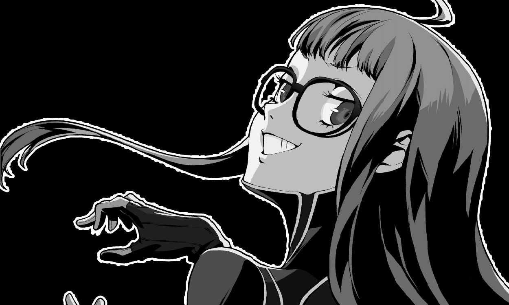

FUTABA (ORACLE)
Una genio de la informática con fobia social. Hija adoptiva de Sojiro, actúa como el soporte logístico y navegadora en el Metaverso.
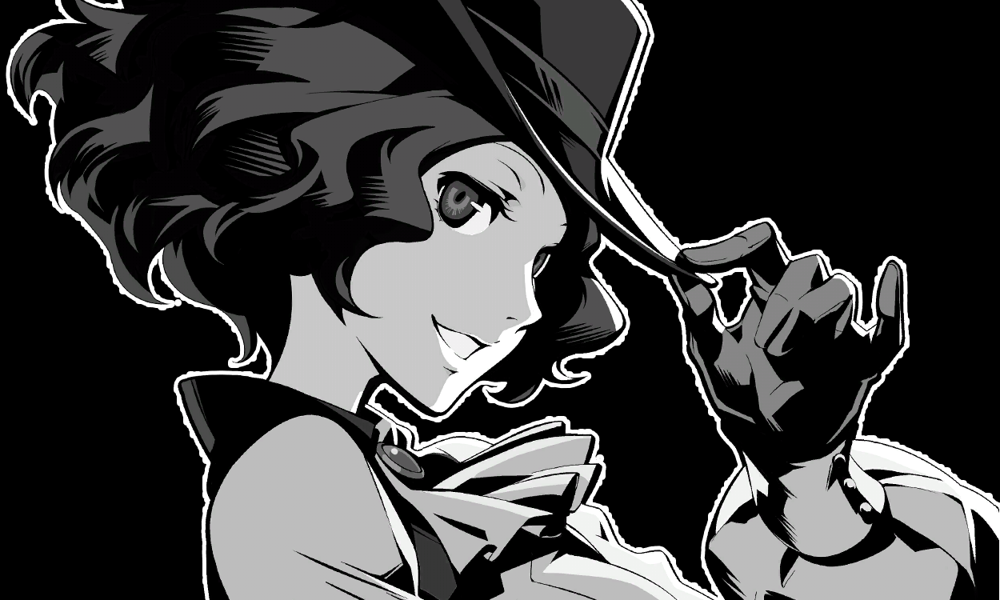

HARU (NOIR)
Hija del presidente de Okumura Foods. De modales amables y afición por la jardinería, se alía al grupo para oponerse al matrimonio forzado que le exige su padre.


AKECHI (CROW)
Famoso detective juvenil. Inicialmente se presenta como un rival opuesto a los Phantom Thieves, compartiendo una compleja relación de alianza y antagonismo con Joker.


SUMIRE (VIOLET)
Prometedora gimnasta de primer año en Shujin. Durante gran parte de la historia se la conoce como Kasumi, guardando una profunda lucha de identidad y trauma que se revela en el tercer semestre de Persona 5 Royal.
PERSONAJES SECUNDARIOS

IGOR
Misterioso maestro de la Velvet Room con una nariz prominente. Guía al protagonista en su camino de rehabilitación y destino.
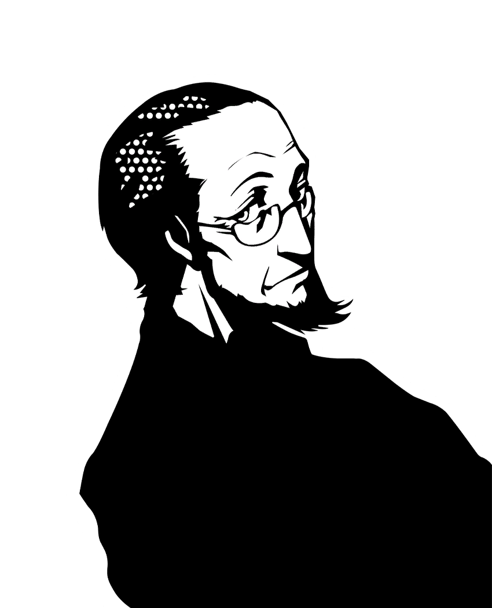
SOJIRO SAKURA
Propietario del café Leblanc y tutor legal del protagonista durante su período de libertad condicional en Tokio.
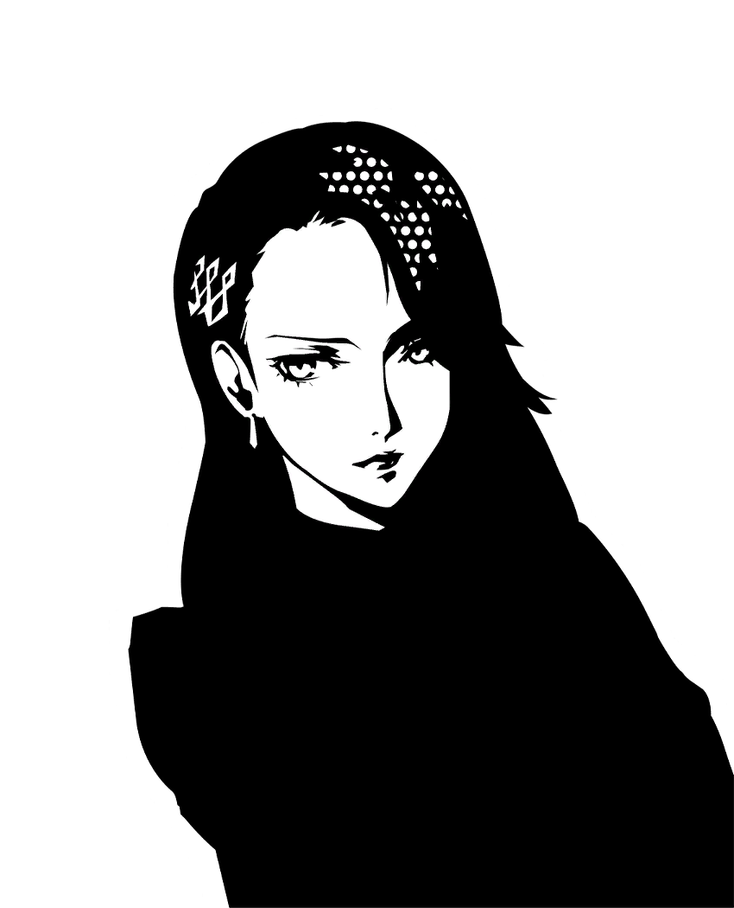
SAE NIIJIMA
Fiscal de la Fiscalía del Distrito de Tokio y hermana mayor de Makoto Niijima.

CHIHAYA MIFUNE
Una adivina de Shinjuku que utiliza cartas de Tarot para predecir el futuro de sus clientes con sorprendente precisión.

CAROLINE Y JUSTINE
Guardias gemelas de la Velvet Room. Vigilan la rehabilitación del protagonista y gestionan las fusiones de Personas.
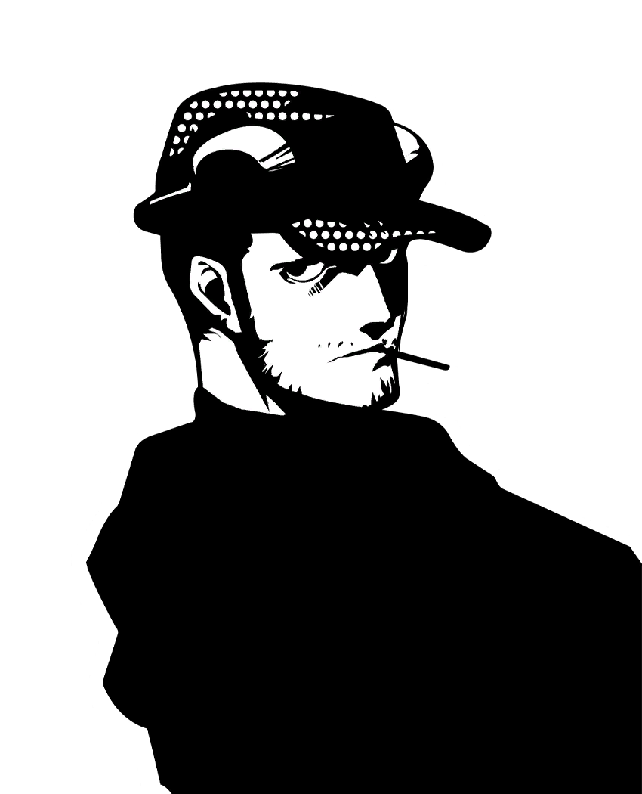
MUNEHISA IWAI
Ex yakuza y dueño de la tienda de armas de aire comprimido Untouchable en Shinjuku. Modifica equipamiento para el grupo.

TAE TAKEMI
Médica con un estilo punk que dirige su propia clínica en Yonchome. Suministra medicinas experimentales a los Phantom Thieves.

SADAYO KAWAKAMI
Tutora del protagonista en la preparatoria Shujin. Para saldar una deuda personal, trabaja en secreto como sirvienta a domicilio.

ICHIKO OHYA
Periodista de prensa rosa que frecuenta el bar Lala Escargot. Busca la verdad tras la desaparición de su antigua compañera.

ODA SHINYA
Joven talentoso conocido como el "King" de los juegos de disparos en los salones arcade de Akihabara.
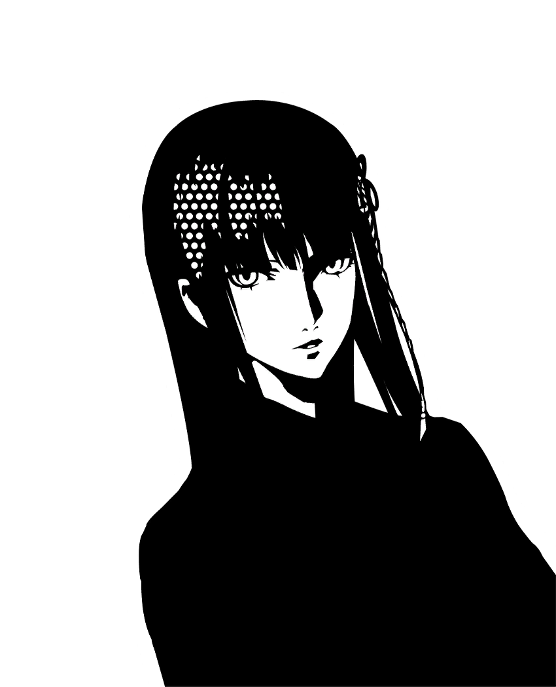
HIFUMI TOGO
Estudiante de la Academia Kosei y jugadora profesional de Shogi. Practica sus tácticas de juego en la iglesia de Kanda.
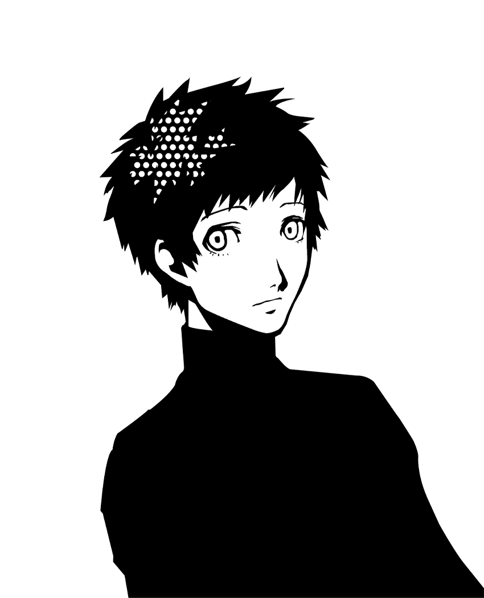
YUUKI MISHIMA
Compañero de clase del protagonista que administra el "Phansite", la página web donde los ciudadanos envían peticiones a los Phantom Thieves.
VILLANOS
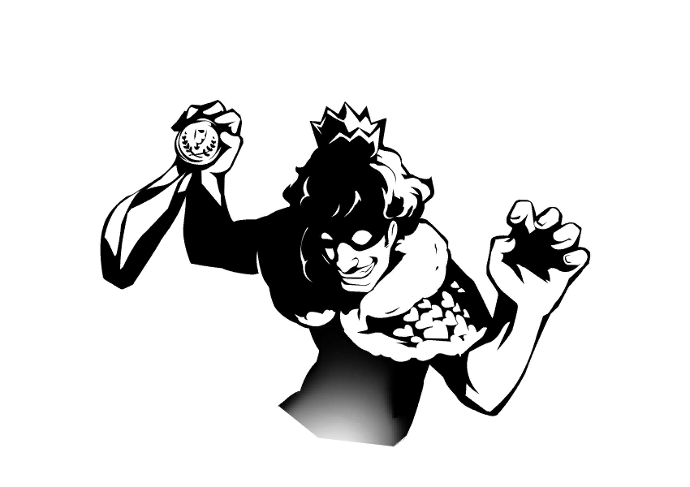
SUGURU KAMOSHIDA
Antiguo medallista olímpico y profesor de educación física en la Preparatoria Shujin. Utiliza su estatus para abusar físicamente de los alumnos del equipo de voleibol y acosar a las estudiantes.

ICHIRYUSAI MADARAME
Renombrado maestro de arte tradicional japonés que acoge a jóvenes talentos como discípulos para plagiar sus obras, atribuirse el mérito de su trabajo y desecharlos cuando ya no le son útiles.
JUNYA KANESHIRO
Líder mafioso sin escrupulos que opera en el distrito de Shibuya. Extorsiona a estudiantes de secundaria mediante engaños y amenazas para meterlos en deudas e introducirlos en redes de trabajo ilegal.
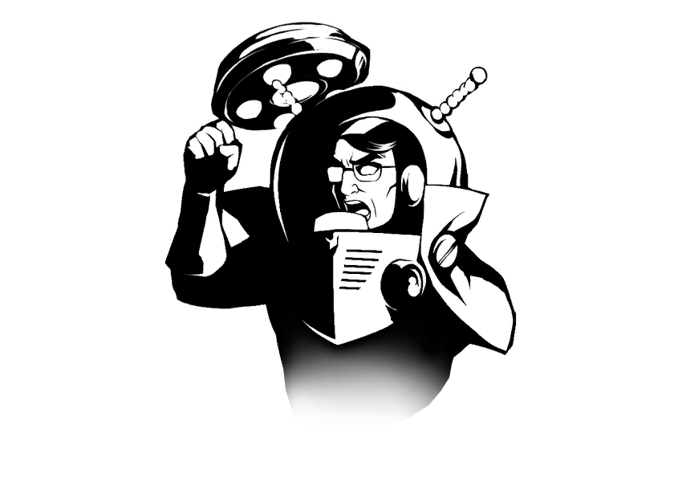
KUNIKAZU OKUMURA
Presidente y CEO de Okumura Foods (cadena de restaurantes Big Bang Burger) y padre de Haru. Explotador laboral que ve a sus empleados como recursos desechables y busca ascender en la política sacrificando el futuro de su propia hija.

MASAYOSHI SHIDO
Político influyente y ambicioso que maneja la corrupción tras bambalinas en el gobierno de Japón. Es el responsable de la falsa acusación que inició la condicional del protagonista y el autor intelectual de las perturbaciones cognitivas.
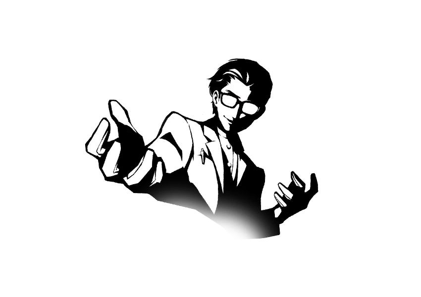
TAKUTO MARUKI
Consejero escolar e investigador de psicología cognitiva introducido en Shujin. A través de su distorsionada visión de la compasión, busca reescribir la realidad para erradicar el sufrimiento creando un mundo donde todos vivan una ilusión perfecta sin dolor.